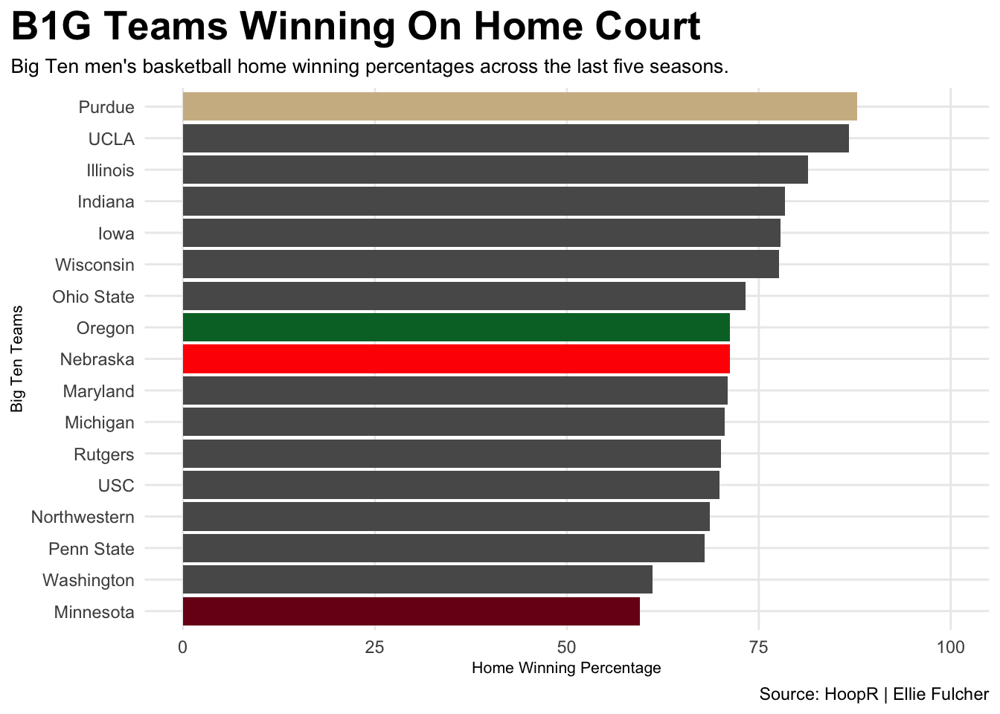

Everyone always talks about home-court advantage when talking about basketball. People have always talked about the pressure of Allen Fieldhouse at Kansas or Cameron Indoor Stadium at Duke. There are thousands of fans cheering and yelling while holding up signs at home basketball games and schools always try to make a loud and crazy environment, but does playing at home actually make a difference?
All arenas are known for different things. Some may be known for being super loud. Others may be known for outlandish student sections. Some arenas are just known for the home team rarely losing there, but which Big Ten arena has been the hardest to play in over the past five seasons?
Using data from HoopR, all 18 Big Ten basketball teams were analyzed over the past five seasons, from 2022-2026. Home winning percentages, home-court advantages, overall winning percentages, score margins, offensive efficiency and turnovers were all looked into to help dive into this question.
Winning on the road in the Big Ten can be hard, but some schools make it nearly impossible, it seems. The first way to look into this idea was to compare each team’s home winning percentage over the last five seasons, which shows which teams have been the best and the worst at defending their home courts.
Code
library(tidyverse)library(hoopR)library(ggrepel)mbb_schedule <-load_mbb_schedule(seasons =2022:2026)big10 <-c("Illinois", "Indiana", "Iowa", "Maryland", "Michigan","Michigan State", "Minnesota", "Nebraska", "Northwestern","Ohio State", "Oregon", "Penn State", "Purdue", "Rutgers","UCLA", "USC", "Washington", "Wisconsin")bigtengames <- mbb_schedule |>filter(home_short_display_name %in% big10) |>filter(neutral_site ==FALSE)home_win <- bigtengames |>group_by(home_short_display_name) |>summarise(total_games =n(),home_wins =sum(home_winner, na.rm=TRUE),home_win_percent= (home_wins/total_games)*100 ) |>arrange(desc(home_win_percent))Huskers <- home_win |>filter( home_short_display_name =="Nebraska" )Ducks <- home_win |>filter( home_short_display_name =="Oregon" )Gophers <- home_win |>filter( home_short_display_name =="Minnesota" )Boilers <- home_win |>filter( home_short_display_name =="Purdue" )ggplot()+geom_bar(data=home_win, aes(x=reorder(home_short_display_name,home_win_percent), weight=home_win_percent))+geom_bar(data=Huskers, aes(x=reorder(home_short_display_name,home_win_percent), weight=home_win_percent), fill ="red")+geom_bar(data=Ducks, aes(x=reorder(home_short_display_name,home_win_percent), weight=home_win_percent), fill ="#007030")+geom_bar(data=Gophers, aes(x=reorder(home_short_display_name,home_win_percent), weight=home_win_percent), fill ="#7A0019")+geom_bar(data=Boilers, aes(x=reorder(home_short_display_name,home_win_percent), weight=home_win_percent), fill ="#CFB991")+scale_y_continuous(limits =c(0, 100))+coord_flip() +labs(x="Big Ten Teams", y="Home Winning Percentage", title="B1G Teams Winning On Home Court", subtitle="Big Ten men's basketball home winning percentages across the last five seasons.", caption="Source: HoopR | Ellie Fulcher" ) +theme_minimal() +theme(plot.title =element_text(size =20, face ="bold"),axis.title =element_text(size =8), plot.subtitle =element_text(size=10), panel.grid.minor =element_blank(),plot.title.position ="plot" )

Purdue is at the top, with UCLA and Illinois close behind, and Minnesota is dead last with a shocking 59% home winning percentage. Interestingly enough, Nebraska and Oregon are tied at 71.26%. Everyone in the Big Ten has won more than half of their home games over the last five seasons, which shows the dominance of the Big Ten.
This produces another question: are certain teams actually harder to beat on their home court or are they just a successful team?
Again, UCLA and Purdue stick out with the highest HCA and overall winning percentages in the conference. Illinois and Michigan State have also made their way to the top. Also, in relation to the last graph, Minnesota and Washington are among the lowest.
Different winning percentages only tell part of the story. There are also factors in how well the team played throughout the game.
Purdue and Illinois stand out yet again, but Michigan State has a margin of victory of zero, which means they play just as well at home as they do on the road, which is an impressive stat. The graph shows that home success involves more than just limiting scoring by the other team.
Based on the data, Purdue has the strongest case for being the toughest Big Ten team to beat at home over the last five seasons. The Boilermakers might have the strongest home court, but these graphs show that winning on the road in the Big Ten is not an easy task, no matter which arena they are in.